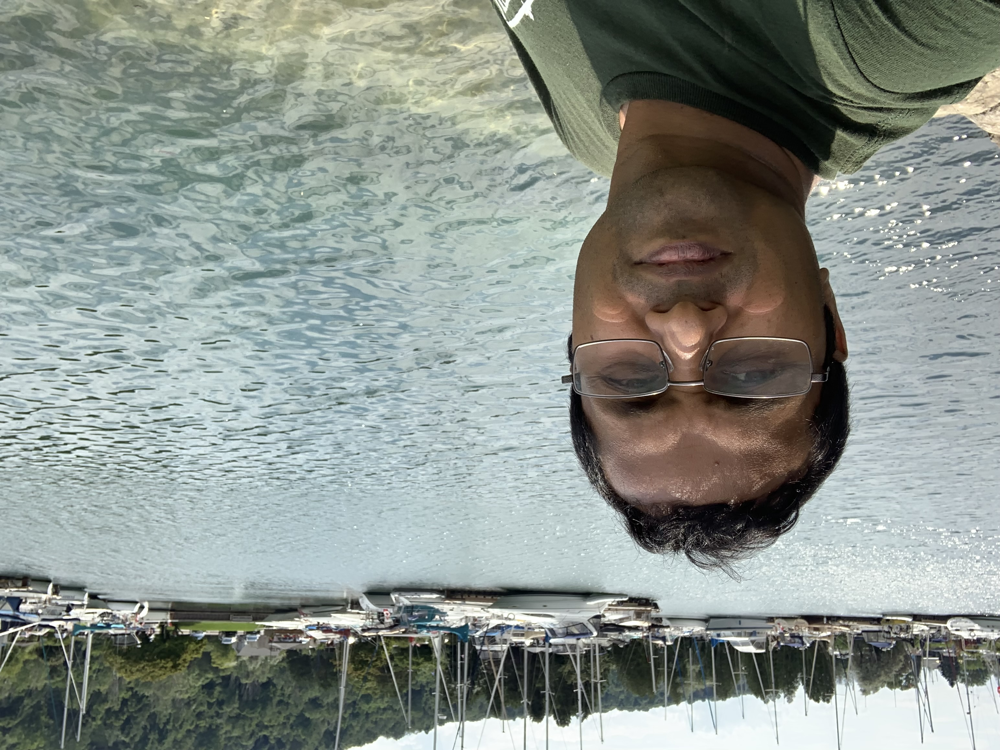

COMP-213-Web Interface Design-Assignment-1
Student Name: Md Ripon Hossain -Student ID:301215985

I have chosen the Centennial College for studying due to the following reasons:
- High quality education system
- Well-established admission procedure
- Career focused pragram
- Good communication system
Currently I have enrolled in Software Engineering Technology program.Earlier I had completed my Bachelor of Science (BS) in Chemisty and worked in a pharmacetical company as a Quality Assurance specialist for around 6 years. While working in pharmacetical, I had to handle different sophistiacted equipments and need to analyze the data using different software tools resulting sparked me to learn more about software technology. That's why I have enrolled in Software Engineering program to enrich my knowledge.
I am too much keen to learn about software engineering and IT relevant programs that will enrich my resume. In future, I want to develop my career in software programming fields where I can utilize my earlier skills
One of my favorite quotes:
"Trust yourself that you can do it and get it" -by Baz Luhrmann
Here are my best favourite activities:
- Watching cricket matches
- Collecting coin
- Helping others
- Travelling
- Playing Cricket
- Reading story book
- Teaching